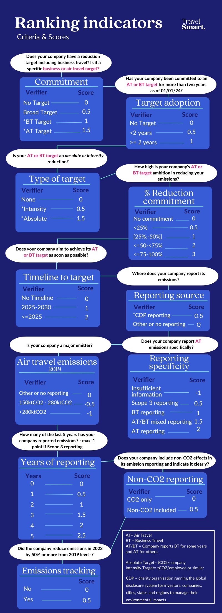
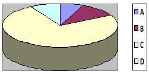
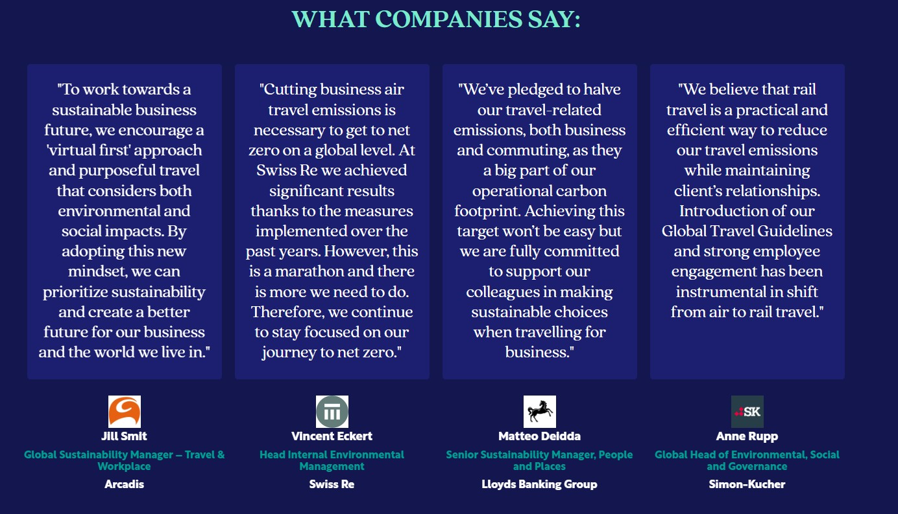

Tools Used
- Building Motivation Over Time
- Feedback
- Financial Incentives and Disincentives
- Mass Media
- Norm Appeals
- Overcoming Specific Barriers
- Vivid, Personalized, Credible, Empowering Communication
Location
Asia, Europe and North America
Initiated By
Transport & Environment (T&E)
Partners
A coalition of partners across Asia, Europe and North America (see https://travelsmartcampaign.org/partners/
Results
- Between 2018 and 2020, 17 large companies reduced their greenhouse gas emissions by roughly 760 million kg.
- Siemens, one of the companies, reduced its emissions by about 140 million kg over the two years.
- Emissions continued to fall during the COVID epidemic, then rebounded afterwards.
- We don’t know what portion of these changes was due to the Travel Smart program itself, and what portion was due to other significant factors like COVID and the development of better virtual meeting services.
Travel Smart
Travel Smart is a global campaign to help businesses move towards purposeful travel and lower corporate emissions, while boosting and scaling innovation. Each year, the campaign ranks over 300 US, European and Asian companies based on their air travel emissions, reduction targets, and reporting. The campaign stands out for its scale, transparency, and systems-level influence.
Travel Smart assigns each company an overall grade from A to D. Companies are grouped by industry sector, to increase the perceived relevance of the ratings. The campaign provides corporate managers with tools to achieve change, improve their grades, develop supportive policies, and build a positive reputation.
Background
Note: To minimize site maintenance costs, all case studies on this site are written in the past tense, even if they are ongoing as is the case with this particular program.
Air travel produces significantly more greenhouse gas emissions per passenger-km travelled than other commonly used forms of transportation. This is especially true for shorter flights.
Travel Smart was a global campaign to help businesses move towards purposeful travel and lower corporate emissions, while boosting and scaling innovation. This rating campaign provided corporate managers with tools to achieve change, improve their grades, develop supportive policies, and build a positive reputation.
The campaign was led by Transport & Environment (T&E) and a coalition of partners across Europe, North America and Asia.
Getting Informed
Travel Smart’s goal was established based upon T&E’s Roadmap to climate neutral aviation. According to that analysis, if the aviation sector wanted to do its fair share of emission reductions and avoid the earth warming more than 1.5°C, a 50% reduction in business travel emissions was needed within a decade.
Travel Smart engaged Ipsos to conduct a survey in October 2022 of 2,506 employees across the United States, the United Kingdom, France, Germany and Spain. Survey participants ranged in age from 18 to 74 and were all were employed full-time at organizations with 50 or more employees. The survey found that three out of four (74% of) employees thought that businesses had to set targets to reduce flying. Respondents were especially receptive to avoiding travel associated with internal meetings (72%) and to using virtual collaboration strategies instead (53%).
Motivators
The three main business drivers for change were:
- Reducing travel costs
- Reducing employee travel time
- Reducing greenhouse gas emissions
Barriers
Travel Smart learned that two key barriers to companies reducing air emissions were a lack of transparency and not setting a specific target.
- By 2023, companies with air travel targets had lowered their emissions by 48% since 2019
- Those with less specific business travel targets had reduced their footprint by 41%
- Those with broader targets (e.g. lumping business travel together with other sources of emissions) had reduced by 35%
- Those with no targets relating to business travel had reduced their emissions by only 28%
Prioritizing Audiences
The program’s primary focus was on corporate sustainability managers. Its secondary focus was on corporate air travelers.
Setting Objectives
Travel Smart initially asked ranked companies to set targets of at least a 50% reduction in air travel emissions from 2019 to 2025. Subsequently, it asked for a 50% reduction from 2025 to 2030.
Delivering the Program
Making the Invisible Visible and Manageable
In 2019, Travel Smart began ranking 326 US, European and Asian companies in 17 countries, based on 11 indicators relating to air travel emissions, reduction targets, and reporting. It assigned each company an overall grade from A to D. Companies were grouped by industry sector, to increase the perceived relevance of the ratings. (Feedback; Vivid, Personalized, Credible, Empowering Communication)
The scores for each category were based on publicly available data on corporate travel policies and practices via the Carbon Disclosure Project (CDP).
The following is a snapshot of the ranking categories and how they contribute to the final ranking published on Travel Smart’s website.

Photo courtesy of Travel Smart.
Prior to the publication of their rankings, companies were informed that they had been selected for the program and were given an opportunity to provide updated information that could impact their rankings. In addition, Travel Smart encouraged companies to submit new data that could influence their ranking at any time by contacting info@travelsmartcampaign.com. New data was reviewed monthly or as it was received. These updates appeared in the “New Developments” section of the Travel Smart website.
As an example of the distribution of grades, the following is a snapshot for 2023 - the fourth year of ranking. The vast majority of companies were rated ‘C’ (yellow.)

The campaign’s rankings made corporate travel impacts publicly visible. It established benchmarks and the level of transparency required to track progress. In addition, as companies shared their stories of what they did and the benefits achieved, they inspired other companies and their employees to develop cultures of purposeful and effective corporate travel and built momentum for lasting change. (Building Motivation and Engagement Over Time; Norm Appeals; Overcoming Specific Barriers; Vivid, Personalized, Credible, Empowering Communication)
Helpful Tools and Approaches
The campaign provided a suggested decision tree for deciding on each trip, based on the relative importance of attending, room in the company’s carbon emissions budget for the trip, and the availability of practical substitutions. If the trip needed to be by air, it recommended taking a direct flight and flying economy class with a fuel-efficient airline. The campaign also recommended and linked participants to some free online emissions calculators. (Vivid, Personalized, Credible, Empowering Communication)
Many of the companies used virtual meeting tools to avoid travelling and organized more decentralized meetings, so participants didn’t have to travel as far. (Overcoming Specific Barriers)
Companies developed their own internal tools to reduce air travel emissions. For example, Arcadis sent its employees quarterly emails that summarized emissions for all trips taken. (Feedback; Vivid, Personalized, Credible, Empowering Communication.) It also offered an extra day off when a worker took the train rather than a plane and the trip was longer than a specified number of hours (Incentives; Overcoming Specific Barriers.) As another example, PwC launched “The Thoughtful Travel Programme” to encourage workers to take emissions into account when planning their travel, and to challenge them regarding their frequency and travel mode.
Promotion
Starting in 2025, rankings were promoted in a two-phase launch: a pre-launch period followed by a ranking publication phase.
During the pre-launch period, a survey was developed and distributed across several social media platforms such as LinkedIn, Instagram, Bluesky, and YouTube. This survey was designed to gather insights into the perceived necessity of air travel for work. This ran from March 4th to 25th.
Leading into the second phase, TravelSmart generated anticipation for upcoming ranking releases through a compelling #GRWM (Get Ready with Me) video. This clip highlighted the impracticality of inter-city air travel.
The second phase began with the release of rankings, promoted through publications and social media outreach. Media coverage was primarily in online and print media. (Mass Media). This lasted from April 1st to April 24th.
This revised outreach approach generated coverage by over 80 publications across 17 countries, including France, Spain, the United States, and Canada. This success was in large part due to the engagements of EU-level media and national partners, who released local adaptations of the press releases.
TravelSmart utilized LinkedIn, X, Bluesky, and YouTube by publishing a variety of posts, videos, and carousels highlighting broad and detailed ranking results.
Overcoming Barriers
The following table indicates the main barriers to action and how they were overcome.
|
Barrier |
How it was addressed |
|
· Lack of transparency |
· Ranked the companies so everyone could see how they were doing |
|
· Not setting specific targets |
· Encouraged participating companies to set targets |
Financing the Program
Travel Smart was an independent, non-partisan, and non-profit organization that received funding from a variety of sources. These included foundations, government agencies, multilateral institutions, and Travel Smart’s own membership comprised of 11 independent environmental organizations across Europe.
The corporate travel emissions ranking program was only one of the activities in the Travel Smart campaign, which dedicates in-house and commissioned resources to research, communications, campaigns and management within a broader budget.
Measuring Achievements
Data on emissions, reduction targets, and reduction efforts were collected from annual reports and other public disclosures by the corporations.
The CDP (formerly the Carbon Disclosure Project) was a primary source of emissions data for many of the companies involved in the ranking. The CDP questionnaire asked companies to document how their data was verified by a third party.
Travel Smart tracked if each company set a target for reducing emissions from air travel and how specific the target was. These sustainability commitments rank among the top three factors influencing travel restrictions within organizations. At the time this program was developed, a significant and increasing number of large global corporations had established targets to reduce air or overall business travel.
Travel Smart also recommended some free online emissions calculators for calculating emissions.
Given the tracking system in place at the time of writing this case study, we understand that it is not possible to know what portion of travel reductions were because of their program itself, and what portion was due to other significant factors. The COVID pandemic is one example; from 2020 to 2022 people were avoiding spending time in confined spaces with others who might be contagious. Air travel dropped accordingly, then rebounded in 2023 and 2024 as the pandemic subsided. As another example, the development of better virtual meeting services likely also contributed to travel reductions.
Results
In 2023, Travel Smart estimated that air travel emissions were 34% below 2019 levels. 37 companies kept their emissions under 50% of their reported 2019 levels.
However, as the air travel market recovered from the COVID pandemic, air travel emissions increased. In 2024, overall emissions rose significantly to 1% above 2019 levels. Emissions from passenger aircraft were only 3% below 2019 levels, and emissions from freight aircraft were 40% higher than 2019 levels.
Given the tracking system in place at the time of writing this case study, we understand that it is not possible to know what portion of these changes were because of the Travel Smart program and what portion was due to other significant factors like COVID and the development of better virtual meeting services (see note above in “Measuring Achievements”).
What is clear is that companies learned to set clear targets to lower their emissions to save time and money while strengthening their reputations, by reducing their air travel and replacing it with other ways of meeting.
The following graphic provides a snapshot of some of the endorsements from benefitting companies.

Notes
Lessons Learned
- Three key strategies stand out as innovative regarding air travel.
- Publicly rating companies based on their air travel emissions, reduction targets, and reporting
- Reporting regularly on these rating at the corporate and individual levels, and
- Sharing stories of what each company had done.
- This case study highlights the value of setting targets that are specific to the behavior changes being promoted.
- It also highlights the potential role of confounding factors such as the COVID pandemic and the development of better virtual meeting services.
Landmark Designation
The program described in this case study was designated by our climate change panel in 2025.
Designation as a Landmark (best practice) case study through our peer selection process recognizes programs and social marketing approaches considered to be among the most successful in the world. They are nominated both by our peer-selection panels and by Tools of Change staff and are then scored by the selection panels based on impact, innovation, replicability and adaptability.
The panel that designated this program consisted of:
- Amjad Alghamdi
- Anna Kelly, Power TakeOff
- Brooke Tully, BrookeTully
- Doug McKenzie-Mohr, McKenzie-Mohr Associates
- Julianna Gwiszcz, Center for Climate Change Communication
- Susan Schneider, Western Michigan University
For More information
- https://travelsmartcampaign.org/about/
- https://travelsmartcampaign.org/how-are-companies-scored/
- https://travelsmartcampaign.org/library/corporate-travel-reduced-by-a-third-on-2019-levels-despite-increased-flying-by-merck-bosch-and-jpmorgan-chase/
- https://impact-on-sustainable-aviation.org/shared-files/2374/?Cirium%20Ascend%20Consultancy_impact_2024-commercial-aviation-emissions.pdf
Case Study Development Credits
This case study was was written by Jay Kassirer and Alayna Murphy in 2025 and 2026, based on information linked to in the section “For More Information”, and correspondence with Denise Auclair, Head of the Travel Smart Campaign.
Search the Case Studies